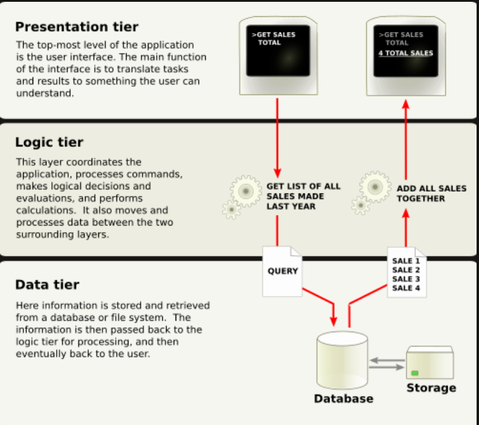

Multitier architecture, also known as n-tier architecture, is a software design approach that divides an application into multiple layers or tiers. Each tier has a specific role, making the system more organized, scalable, and easier to manage.In a typical web application, multitier architecture separates the user interface, application logic, and data storage into different layers. This separation allows developers to work on each part independently without affecting the entire system.
When a user performs an action, the request moves from the presentation layer to the application layer, which processes it and interacts with the data layer if needed. The result is then sent back to the user through the presentation layer.
Multitier architecture is widely used in modern web applications, including online banking systems, e-commerce platforms, and enterprise software solutions.